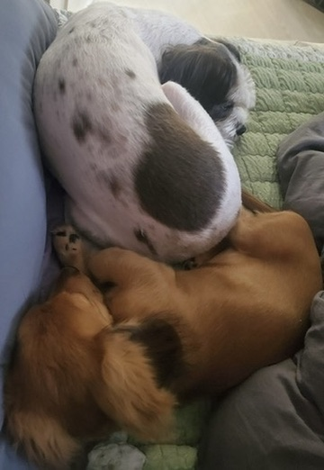
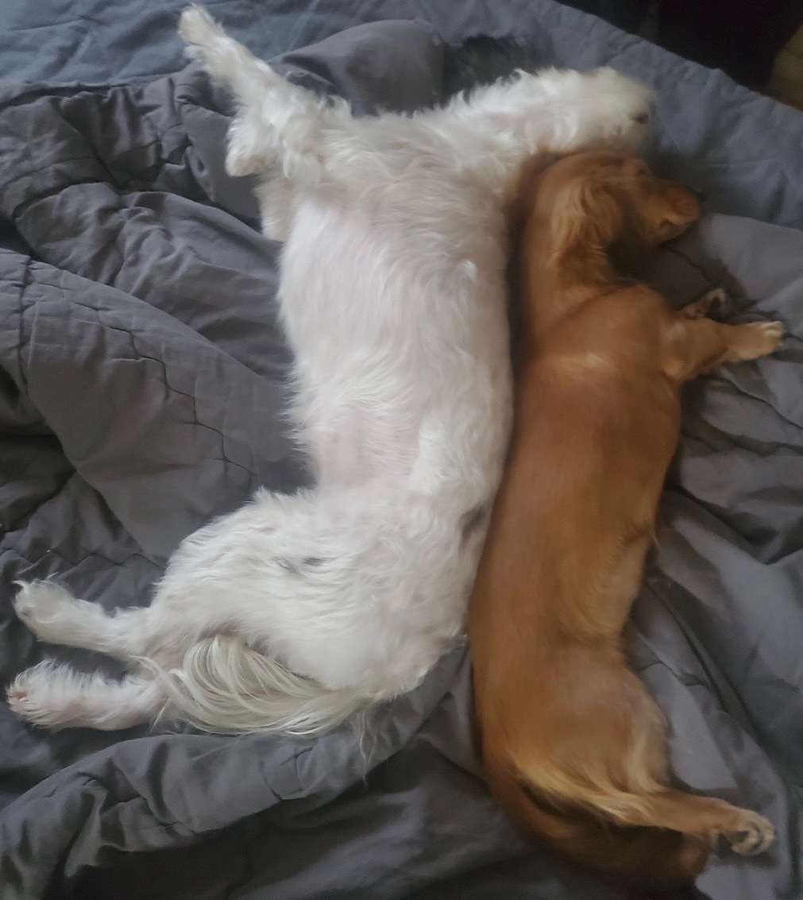
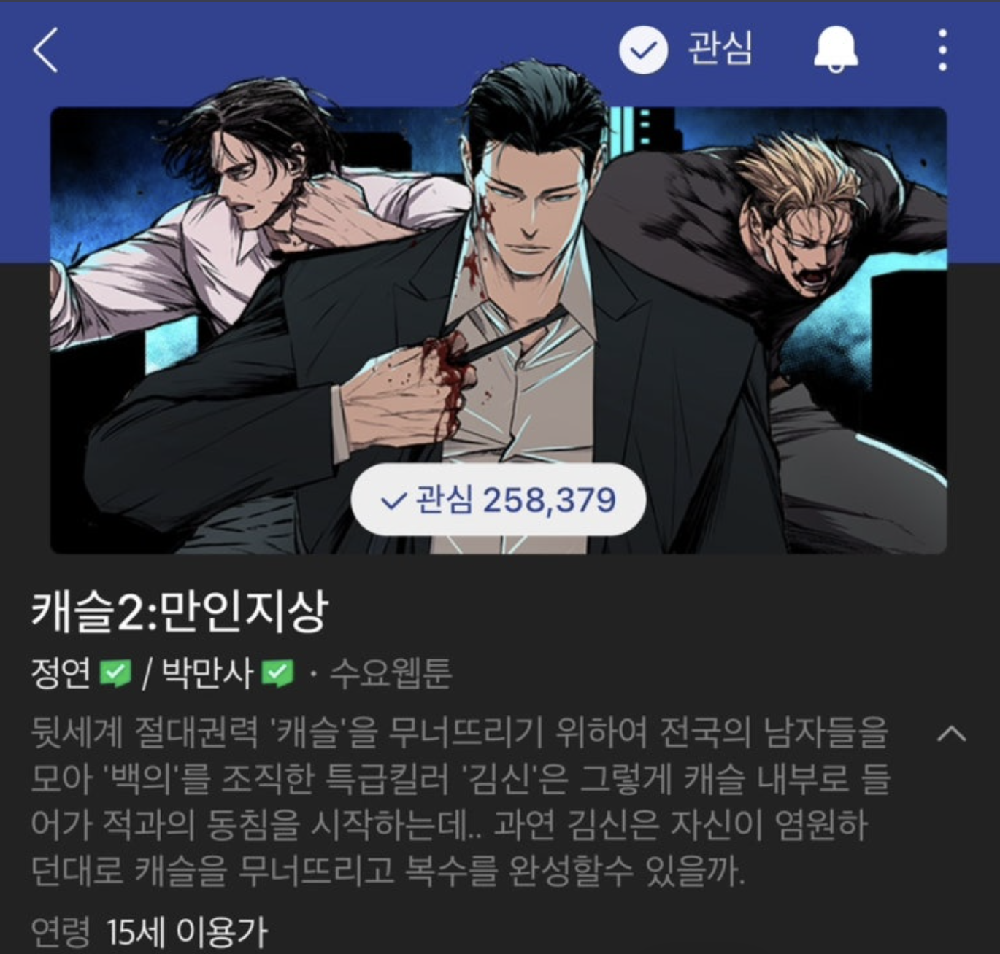

너의 결혼식
첫사랑의 힘은 위대하다..!! 남자들의 공감대인 첫사랑이 무엇인지 보여주는 영화!!!
"결국 사랑은 타이밍이다"
"세상에 반이 여자면 뭐해!! 너가 아닌데..."
항상 궁금한 제리⁉️
안녕하세요. 우테코 8기 백엔드 마을에서 13층 둠바족 소속인 와이제리입니다.
10개월 동안 학습 마인드 셋을 잘 유지해서 많은 것을 배워가고자 합니다.
GitHub: yj9107v
| 이름 | 최용준 |
|---|---|
| MBTI | ISFJ |
| 취미 | 웹툰, 운동, 내가 좋아하는 밥 먹기 |
| 좋아하는 음식 | 치킨(교촌: 레드콤보, 처갓집: 슈프림, 굽네: 고바순), 우리 동네 돈까스, 라면 |
울집 애기들


첫사랑의 힘은 위대하다..!! 남자들의 공감대인 첫사랑이 무엇인지 보여주는 영화!!!
"결국 사랑은 타이밍이다"
"세상에 반이 여자면 뭐해!! 너가 아닌데..."

남자들의 웹툰, 느와르 장르를 좋아한다면 네이버 웹툰 계의 톱이다.
"됐다, 선택했으니 난 자유인 거야."
"이 간격 안에선 하나님이 온다 한들 못 피하니까."
오늘 새롭게 배운 것들을 기록합니다.
header, nav, main, section, article, footer 등 시멘틱 태그의 역할과 사용법을 배웠다.